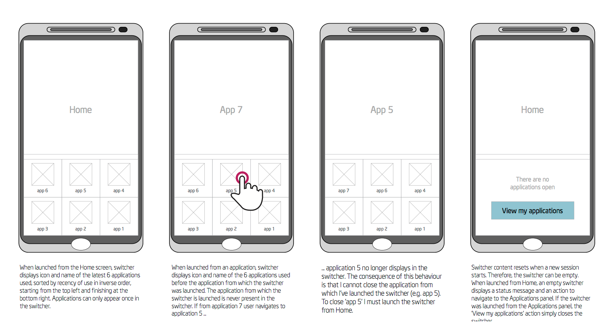

Belén Pena's portfolio
Some samples of my design and research work over the past 10 years.
Design
Multitasking - Tizen mobile operating system
Contacts application - Tizen mobile operating system

Email application - Tizen tablet operating system
Peer to peer mobile sharing concept - Intel
Wireframes for Insight Recorder, a Linux usability testing tool

Low fidelity design concepts - Truphone website redesign
Wireframe - British Telecom
Page descrition diagram - British Telecom
Sitemap - Truphone website redesign

Sitemap - Toaster, the OpenEmbedded web interface
Prototyping

Low fidelity prototype - Toaster, the OpenEmbedded web interface

High fidelity web prototype - MHRA export license application process

High fidelity web prototype - Toaster, the OpenEmbedded web interface
High fidelity web prototype - Patchwork fork for OpenEmbedded

High fidelity web prototype - Yocto Project Recipe Reporting System
Research

Usability study - MHRA case management system

Survey report - Yocto Project

Mapping the Yocto Project developer experience

Task success rates - usability study of an investment banking prototype

Benchmarking study - retail banking

Scenario for persona definition - Truphone website redesign

Persona - investment banking